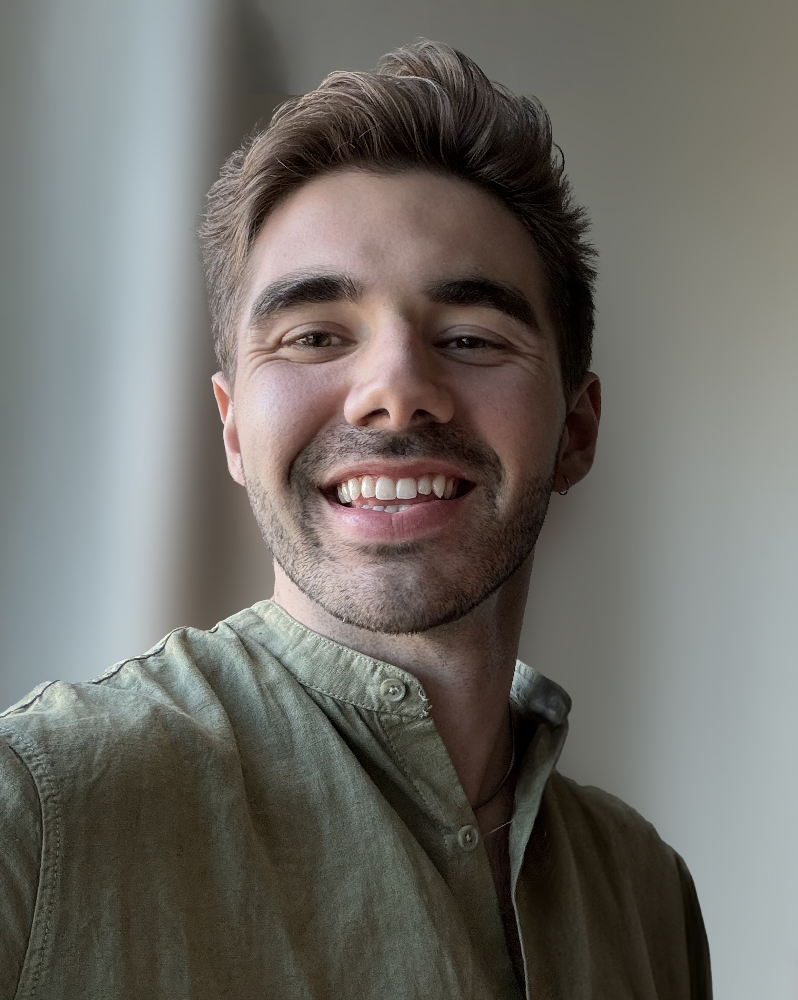

I'm a Brazilian designer with an obsession for uniqueness.
After graduating with a M.S./MBA from ArtCenter College of Design in 2022, I've had the fortune of working with world class designers, engineers, and product managers who I'm now proud to call friends.
My work is fueled by curiosity and driven by detail. I enjoy designing at the edge of the conventional, where object typology is a loose suggestion.
For inquiries please email
pedro@pvillar.com
